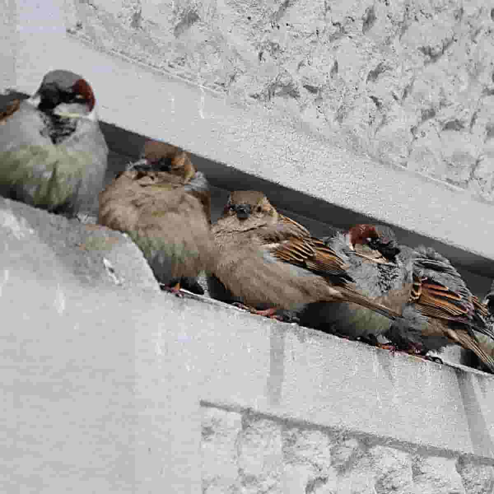
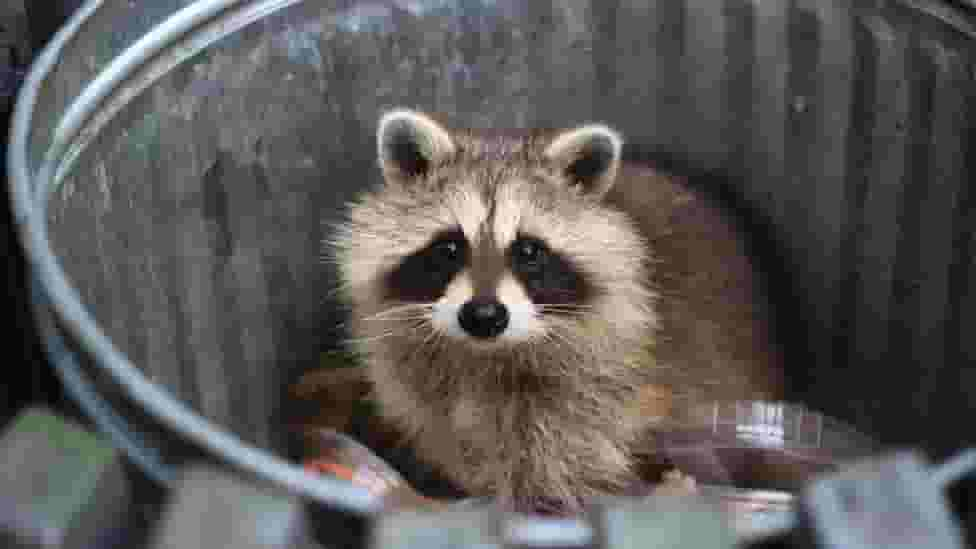
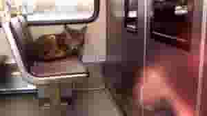
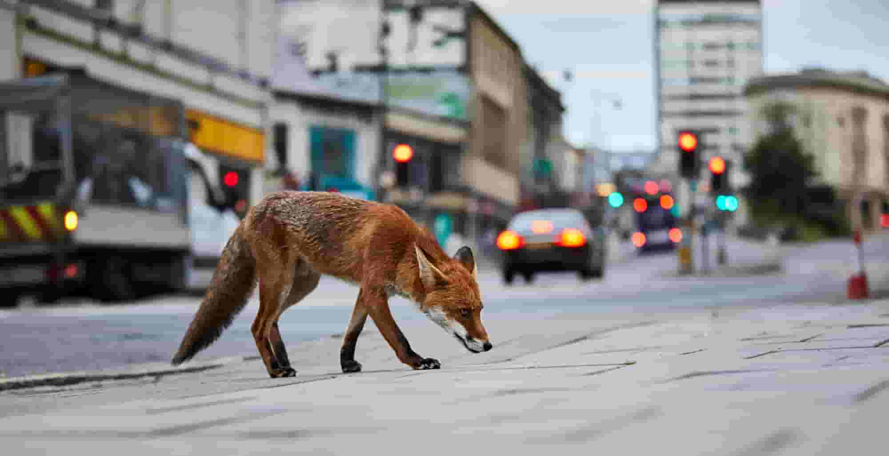
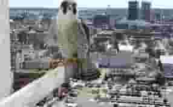
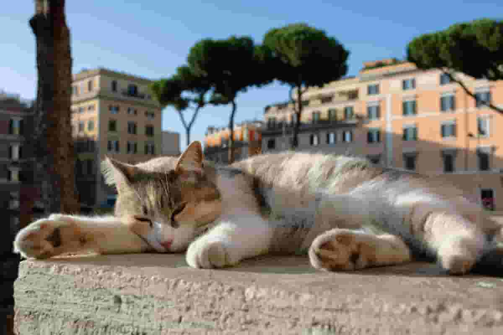
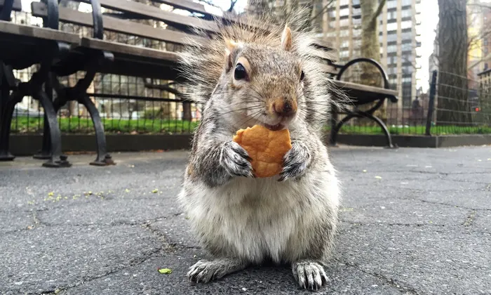
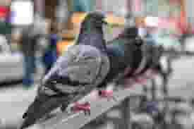
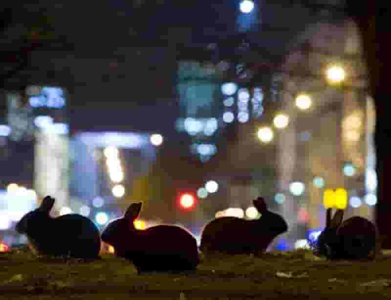

City Survival Stories: Urban Wildlife Tales
10 Urban Wildlife Wonders
Urban environments around the world host a diverse range of wildlife,
including animals that have adapted to city life.
These 10 representative cases of urban wildlife showcase the adaptability and resilience of various species
in the face of urbanization. Their abilities to exploit available resources, navigate human-made structures,
and adapt to the challenges of city life exemplify the diverse ways in which urban animals thrive in urban
environments.
House Sparrows (Passer domesticus)  Adaptation: Nests in building crevices and forages for food scraps in urban areas.
Raccoons (Procyon lotor)  Adaptation: Opportunistic feeders that raid trash cans and find food in urban settings.
Coyotes (Canis latrans)  Adaptation: Nocturnal behavior and ability to find food in cities, including hunting rodents and scavenging.
Red Foxes (Vulpes vulpes)  Adaptation: Adaptability to diverse diets and nesting in green spaces within cities.
Peregrine Falcons (Falco peregrinus)  Adaptation: Nesting on skyscrapers and hunting urban birds such as pigeons.
Feral Cats (Felis catus)  Adaptation: Predatory behavior in urban settings, where they hunt birds and small mammals.
Norway Rats (Rattus norvegicus)
 Adaptation: Thrives in urban environments with access to abundant food sources, including human waste.
Adaptation: Thrives in urban environments with access to abundant food sources, including human waste.
Eastern Gray Squirrels (Sciurus carolinensis)  Adaptation: Nests in urban trees and feeds on a variety of available food sources, including bird feeders.
Pigeons (Columba livia)  Adaptation: Nests on building ledges and utilizes urban structures for shelter and breeding.
Eastern Cottontail Rabbits (Sylvilagus floridanus)  Adaptation: Often seen in urban green spaces, feeding on lawns and gardens.